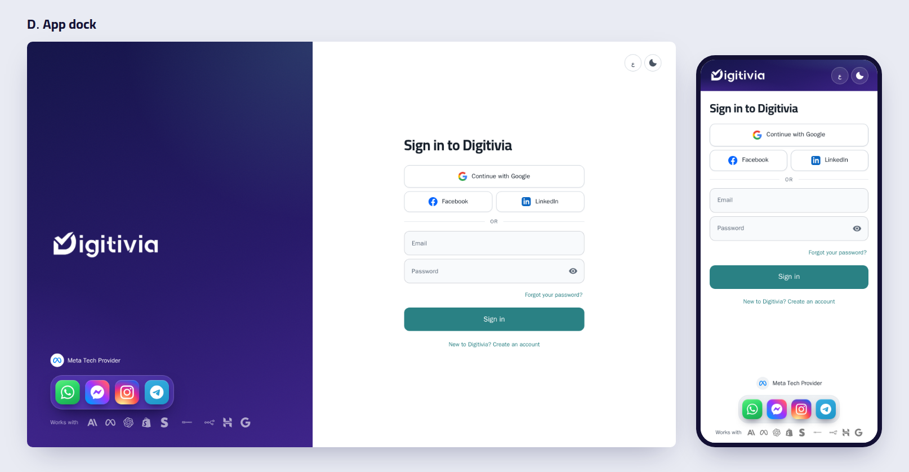
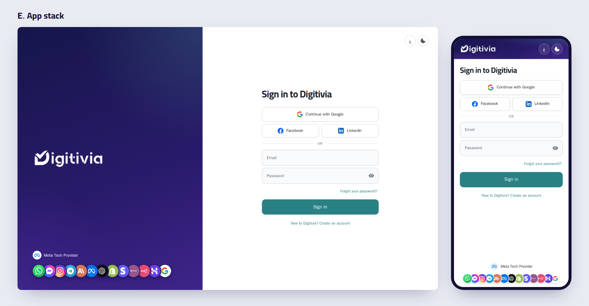
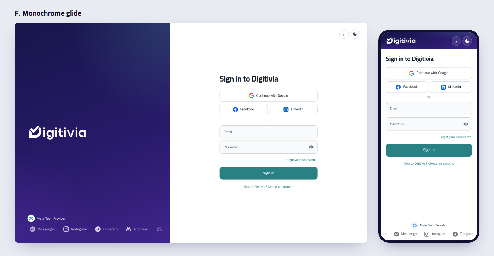

Each option shows all 13 logos: the four chat channels plus the landing page's Anthropic, Meta, OpenAI, Shopify, Stripe, WooCommerce, n8n, Hostinger and Google. The Meta Tech Provider line stays as it is. Each image shows desktop and phone; each video shows the pointer moving over the logos.
The four chat channels as real app icons, like a phone's home screen, in a glass dock that magnifies the icon under the pointer and shows its name. Below it, the tools sit in quiet white and light up in their own colours on hover, as on your landing page strip.

All 13 as round app icons in one overlapping row, the way profile pictures stack. On hover the row fans open and the icon under the pointer lifts and shows its name.

One calm lane of white logos and names, gliding slowly with faded ends. The understated look premium software sites use for their logo walls.

All three fit without scrolling on desktop and phone. Whichever you choose will work in Arabic (mirrored) and in dark mode, stand still for anyone who has turned motion off, and keep every logo's name for screen readers.